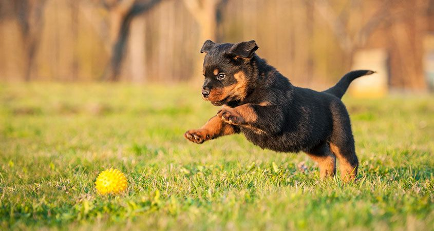
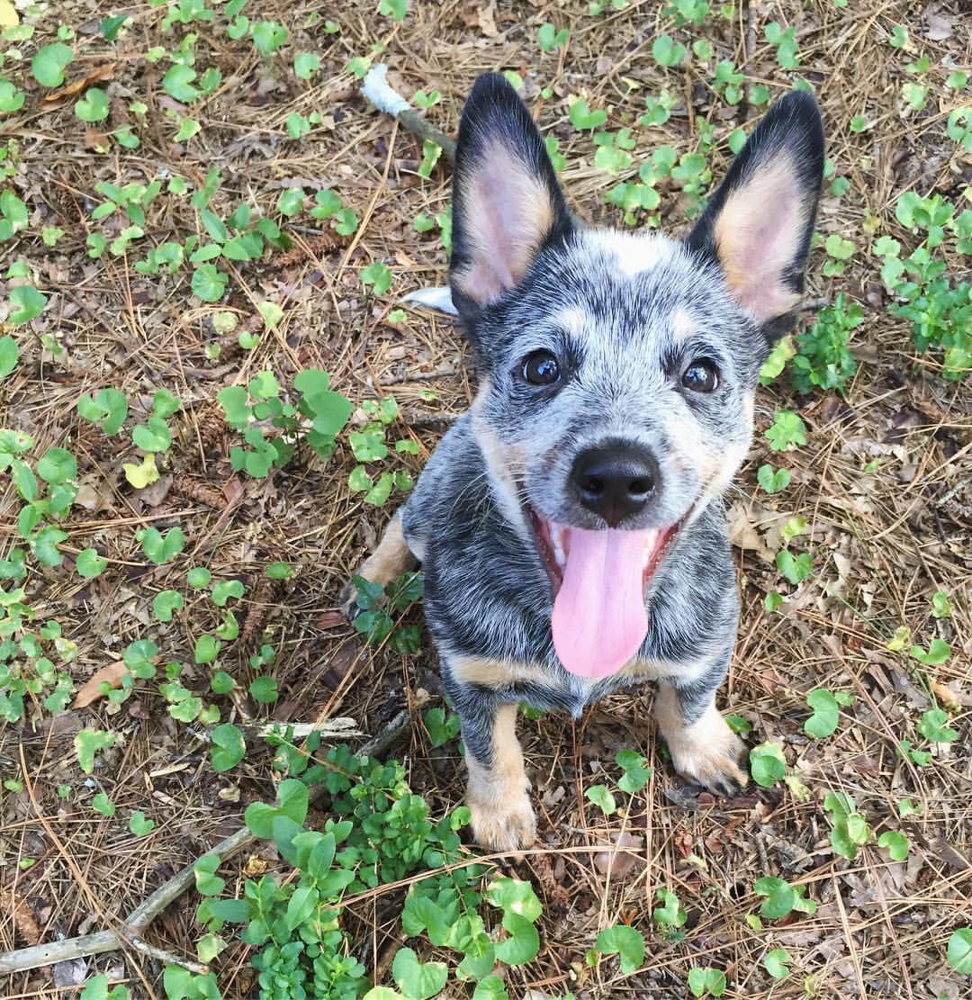

<!DOCTYPE html>
<html>
<head>
    <meta charset='utf-8' />
    <title>Display a map with a custom style</title>
    <meta name='viewport' content='initial-scale=1,maximum-scale=1,user-scalable=no' />

    <!-- This lets you use Mapbox GL JS in your code. -->
    <script src='https://api.tiles.mapbox.com/mapbox-gl-js/v0.47.0/mapbox-gl.js'></script>
    <link href='https://api.tiles.mapbox.com/mapbox-gl-js/v0.47.0/mapbox-gl.css' rel='stylesheet' />

    <!-- This is inline CSS, which styles your web page. -->
    <style>
        body { margin:0; padding:0; }
        #map { position:absolute; top:0; bottom:0; width:100%; }

        .marker {
            background-image: url('tennis.jpg');
            background-size: cover;
            width: 40px;
            height: 40px;
            cursor: pointer;
          }

          .mapboxgl-popup {
            max-width: 370px;
            height: 160px;
          }

        .mapboxgl-popup-content {
            text-align: center;
            font-family: 'Courier';
          }
    </style>
</head>

<body>

<!-- This is the container your map will go into. -->
<div id='map'></div>

<script>

/*** Make sure to add your access token and your desired map style. ***/

mapboxgl.accessToken = 'YOUR-ACCESS-TOKEN';

/* This sets up your map view. */
var map = new mapboxgl.Map({
    container: 'map',
    style: 'YOUR-MAP-STYLE',
    center: [-104.995221, 39.739718],
    zoom: 4
});

/* This is the data in GeoJSON format. */
var geojson =
	{
	    type: 'FeatureCollection',
	    features: [{
	        type: 'Feature',
	        geometry: {
	          type: 'Point',
	          coordinates: [-81.786491, 32.420200] /* Coordiantes where your marker will appear. */
	        },
	        properties: {
	          description: '',
            text: "rotty puppy"
	        }
	    },
	    {
	        type: 'Feature',
	        geometry: {
	          type: 'Point',
	          coordinates: [-86.921206, 40.423664]
	        },
	        properties: {
	          description: '',
            text: "white puppy"
	        }
	    },
	    {
	        type: 'Feature',
	        geometry: {
	          type: 'Point',
	          coordinates: [-76.638496, 39.300143]
	        },
	        properties: {
	          description: '',
            text: "cattle puppy"
	        }
	    }]
	};

/* This is saying: for each feature in geojson, run the function. */
geojson.features.forEach(function(marker) {

/* Create a HTML element for each feature */
var el = document.createElement('div');
el.className = 'marker';

/* Make a marker for each feature and add to the map. */
new mapboxgl.Marker(el)
  .setLngLat(marker.geometry.coordinates)
  .setPopup(new mapboxgl.Popup({ offset: 25 }) // add popups
  .setHTML('<p>' + marker.properties.description + '<br>' + marker.properties.text + '<p>'))
  .addTo(map);
});

</script>

</body>
</html>
